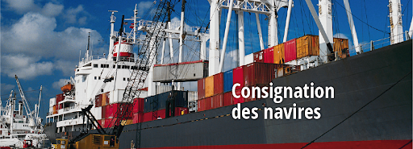
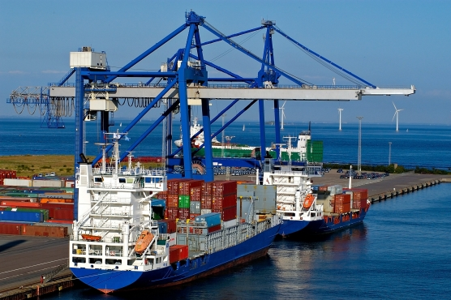
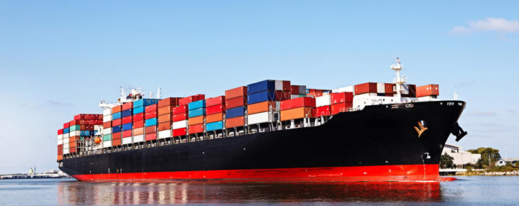

-1-
NASHCO, en vertu d'un mandat de l'armateur, à pour missions:

La Consignation Maritime
- Accomplir les opérations de réception et de livraison des marchandises transportées par l’armateur;
- La conduite administrative du navire auprès des autorités locales;
- La conclusion des contrats de manutention, de remorquage et de pilotage;
- L’assistance au navire pendant son séjour dans le port;
- La fourniture des fonds nécessaires au capitaine;
- Le payement des droits, des frais et d’autres charges dus à l’occasion de l’escale du navire dans le port.
La Logistique
- Réceptionner les conteneurs vides au parc pour stockage et entreposage;
- Positionner les conteneurs endommagés en vue de leur réparation;
- Mettre à disposition des clients, avec l’accord préalable de l’armateur, des conteneurs vides pour empotage et export pleins;
- Transfert et embarquement des conteneurs vides.


Avitaillement / Ravitaillement
Les opérations d’Avitaillement – Ravitaillement menées par NASHCO, consistent à pourvoir le navire, avant son appareillage, de tout ce qui lui sera nécessaire à son fonctionnement et à son entretien, que ce soit en matière de:
- Vivres et provisions destinés à être consommés;
- Ou de combustible, carburants, lubrifiant … etc.
Le Transit
- Déclaration et dédouanement de la marchandise;
- S’acquitter, au nom et pour le compte du client, de tous les droits et taxes liés au dédouanement de la marchandise;
- Transport pré-acheminement et post-acheminement des marchandises jusqu’au lieu indiqué par le client.